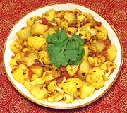

|
Cauliflower & Potato CurryIndia - South (Tamilnadu) - Thekkadi Kootu | ||||
| Serves: Effort: Sched: DoAhead: |
2 main *** 50 min 90% |
Cauliflower is a luxury item in southern India, but some is grown in the Nilgiri hills. This recipe is mildly spiced, delicious, and pairs well with basmati or jasmine rice. It can be made ahead to the last 4 minutes. | |||
|
8 8 6 ----- 1/2 1/2 1/4 1/2 1/2 ----- 1/3 2 1/2 1/2 1/3 2 |
oz oz oz --- # t t t t --- in T t t c t |
Cauliflower (1) Potatoes (2) Onion -- Tomato mix Tomatoes Coriander Seed Chili powder (3) Turmeric Salt ----------- Ginger Root Oil Cumin seed Mustard Seed (4) Water Lime Juice |
PREP - (45 min)
|